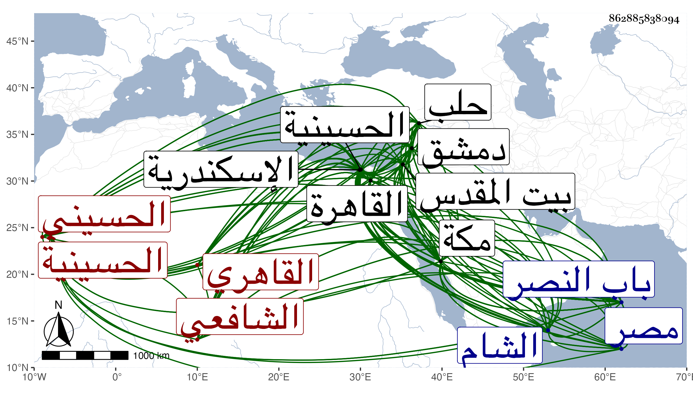

0902Sakhawi.DawLamic.ITO20230111-ara1.EIS1600.862885838094
Biography ID: 862885838094
438
محمد بن علي بن جعفر بن مختار الشمس أبو عبد الله القاهري الحسيني الشافعي ويعرف بابن قمر . ولد مزاحما لرأس القرن واختلف قوله في تعيينه بل كتب بخطه نقلا عن أمه أنه في أثناء سنة ثلاث وعليه اقتصر البرهان الحلبي بالحسينية من القاهرة ونشأ بها فحفظ القرآن والعمدة والمنهاج وألفية الحديث والنحو ومختصر ابن الحاجب الأصلي والبعض من التنبيه ومن البيضاوي ، وعرض على جماعة كالعز بن جماعة والجلال البلقيني واشتغل في الفقه على البيجوري والشهاب الطنتدائي والزين القمني وأكثر من ملازمته بل وملازمة ولده المحب من بعده وكذا أخذ عن الشمس البوصيري في العربية وغيرها وعن المجد البرماوي والبرهان بن حجاج الأبناسي والقاياتي وطائفة وقرأ ألفية الحديث على الولي بن ناظمها رواية ثم بحثا مع الكثير من شرحها ثم أخذ الشرح عن شيخنا واشتدت عنايته بملازمته في هذا الشأن حتى حمل عنه جملة من الكتب الكبار ووالى عليه البر والإحسان مبتدئا بذلك مرة ومسئولا فيه أخرى وكان ضابط الأسماء عنده وارتفق بذلك خصوصا من الغرباء بل واستملى عليه بعد الزين رضوان وقدمه فيه على غير واحد ممن كان يتمناه ، وطلب بنفسه وكتب الكثير سيما من تصانيف شيخنا حتى أنه كتب فتح الباري مرتين وباعهما ودار على الشيوخ . وارتحل للبلاد الشامية وغيرها وسمع بمكة وبيت المقدس والخليل ودمشق وحلب واسكندرية وغيرها وتكرر له دخول بعضها بل دخل الشام في صغره مع أبويه . ومن محاسن شيوخه بالقاهرة الشموس الشامي وابن الجزري وابن المصري والبدر حسين البوصيري والكلوتاتي والواسطي وبحلب البرهان الحلبي وأقام عنده نحو شهر وبدمشق ابن ناصر الدين وببيت المقدس القبابي وبالخليل التدمري وباسكندرية قاضيها الجمال بن الدماميني وبمكة فيما كان يخبرنا به الزين عبد الرحمن بن طولوبغا . وعرف بالطلب واشتهر بالحديث ووصفه شيخه الحلبي بالشيخ المحدث الفاضل بل وترجمه ببعض مجاميعه . وهو أحد العشرة الذين أوصى لهم شيخنا بعد موته ووصفهم بالحديث . وأذن له القمني في التدريص والافتاء وشيخنا في افراء فنون الحديث وغيرهما وغيرهما ، وناب عن المناوي فمن بعده في القضاء بالقاهرة وأضيف إليه في بعض الأوقات قضاء بعض الجهات انتزعها له من المحب بن الشحنة وما كنت أحب له الدخول في القضاء مع أنه لم يحصل فيه على طائل . وكذا ناب في تدريس الفقه بالظاهرية القديمة وغيرها وقرأ الحديث في كثير من الأماكن كجامع الحاكم والخانقاه البيبرسية وكان إمامها والقارئ بدرس الحديث فيها زمنا وأحد صوفيتها حتى مات . بل قرأ بأخرة بمجلس الأشرف قايتباي حين توعك صاحب الوظيفة مجلسا وتنزل في صوفية الخانقاه السعيدية أيضا ورأيته يقرأ الحديث بها أحيانا بعد انتهاء الحضور ، وكذا تنزل في غيرها من الأطلاب ، وحدث باليسير أخذ عنه جماعة من الطلبة وحدثني من لفظه بالمسلسل بالأولية وكذا سمعت منه غير ذلك من الحديث والفوائد وربما كتب على الفتوى . واختصر الأنساب لابن الأثير في مجلد وقفت عليه وسماه معين الطلاب بمعرفة الأنساب وشرع في اختصار أطراف المزي وسماه إلطاف الأشراف بزهر الأطراف في أشياء ليست بالمتينة مع أوهام فيها وعدم حسن تصرف لكونه لم يكن في الفن ولا غيره بالبارع ، وكان جامدا بطيء الحركة غير حاذق في شيء من أنواعه لكنه كان يستحضر أشياء من المتون والرجل ذا أنسة بالفن في الجملة وإحساس بطرف من الفقه والعربية ملازما الانجماع غالبا مديما للتلاوة والجماعات مقبلا على التحصيل مع التقنع باليسير والتودد للفضلاء ومزيد التواضع وطرح التكلف وحسن العشرة والسكون والاحتمال ولين الجانب ومقاساة ضنك العائلة وخفة المؤنة . وقد منحه الله القيام على عدة بنات حتى زوجهن ، وأنشأ لنفسه بكل من القاهرة ومصر دارا بعد أن جدد أخرى وهو من قدماء معارف الوالد ولذلك استدعى لي في رحلته الشامية الإجازة من جماعة من الأعيان كثر دعائي له بسببهم ثم كثر اختصاصي معه ومرافقته لي في الطلب ومزيد اغتباطه بي وإظهاره من التعظيم والإجلال ما يفوق الوصف لفظا وخطا خصوصا حين يقصدني في أشياء من متعلقات هذا الشأن يزول الأشكال عنه فيها حتى كان يحلف بالإنفراد وعدم المشاركة . ورأيت منه مزيد التألم بكائنة الكاملية وصار مع ذلك يخفض عني أمرها ويقول لم أزل أسمع شيخنا يقول لا أعلم الآن وظيفة في الحديث مع مستحقها ويردف ذلك بقوله العلم يبطئ ولا يخطئ ولا بد لك من كذا وكذا وأحب أن ، لا تهملني . ورام غير مرة كتابة ترجمة شيخنا تصنيفي والمرور عليها معي فما تيسر . هذا مع كوني في عداد أولاده وممن استفاد منه في ابتداء طلبه ، ولم يزل يرغب عن وظائفه شيئا فشيئا وكذا عن كثير من كتبه حتى مات في ليلة الاثنين ثالث عشر جمادى الأولى سنة ست وسبعين بعد توعكه مدة طويلة وصلي عليه من الغد بمصلى باب النصر ودفن بجوار قبر أمه بمقبرة باب الصحراء من باب النصر بين النشاشيبي والعصافيري وأثنى الناس عليه رحمه الله وإيانا . وقد وصفه البقاعي بالشيخ الإمام المحدث الرحال ثم رماه لتقديم شيخنا له عليه في الاستملاء ونحوه نسأل الله السلامة .
